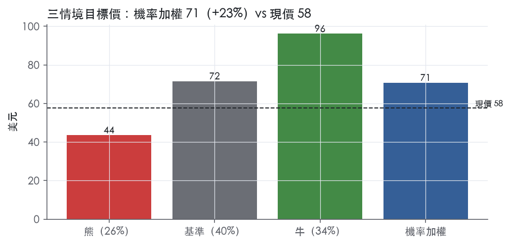
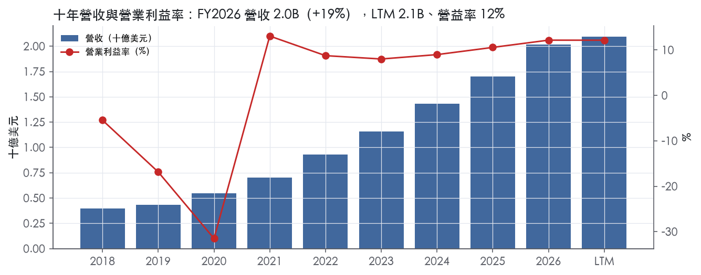
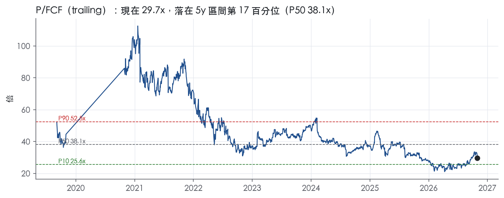
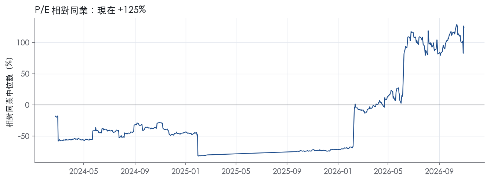
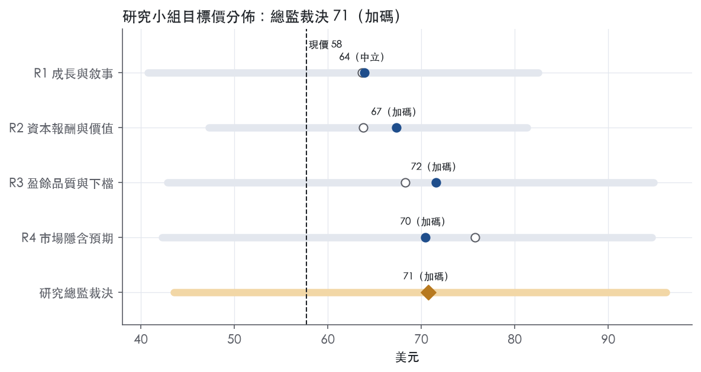
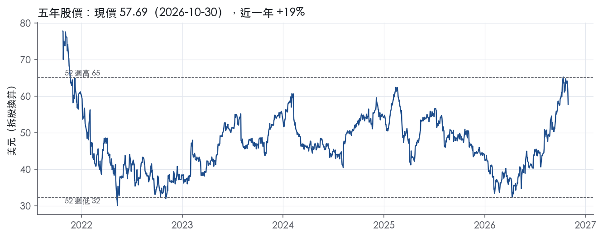

評等總表 › 資訊科技 › DT
倍數不擴張仍過門檻，看多｜評等 加碼｜目標價 71
| 報告日 | 評等 | 目標價 | 當時股價 | 超額報酬 |
|---|---|---|---|---|
| 2026-10-30 | 加碼 | 70.76 | 57.69 | +12.7% |
| 評等 | 加碼（邊界，鄰近買進） |
| 12 個月目標價 | 71 美元 |
| 現價 | 57.69 美元（2026-10-30） |
| 預期報酬 | 股價 +22.7%＋股息 0.0%＝總報酬 +22.7%；同業籃門檻 10.0%，超額 +12.7% |
| 估值方法 | P/FCF 28.0x，套在第 5–8 季的自由現金流（也就是一年後的未來四季） |
| 三情境 | 熊 44／基準 72／牛 96 |
| 研究流程 | 四位研究員兩輪辯論＋研究總監裁決 |
| 資料來源 | SEC EDGAR XBRL、Tiingo、FRED（全免費） |
倍數不擴張仍過門檻，看多（研究總監裁決，四位研究員兩輪辯論後）
評等 加碼（邊界，鄰近買進）｜12 個月目標價 71 美元（總監三情境機率加權 73 與研究員中位數 69 各半）｜現價 57.69（2026-10-30）
預期報酬：股價 +22.7%＋股息 0.0%＝總報酬 +22.7%。同業籃門檻 10.0%，超額 +12.7%，離買進的分界不到三個百分點，屬邊界評等（落在其他級距的機率約三成）。
估值方法：P/FCF 28.0x，套在第 5–8 季的自由現金流（也就是一年後的未來四季）。三情境：熊 44（26%）／基準 72（40%）／牛 96（34%）。
評等說明：研究總監自己的機率加權目標價 73 美元對應「買進」；與研究員第二輪中位數 69 美元各半後為 71 美元，落入「加碼」。兩者只差一級，請把這檔讀成「買進～加碼」，正文裡總監的立場文字以「買進」寫成。
什麼會讓研究總監改變看法：FY2027Q3 固定匯率 ARR 跌破 15% 且 GAAP 營益率再現 7% 型態，Y2／Y3 退回基準、倍數改採 R1 的 trailing 持平 29.5x@ntm 轉中性；反之 Q3 固定匯率 ARR ≥18% 且 FY2028 指引中點 ≥14%，基準倍數上移到帶 P10 29.4x。
| 過去四季（實際，FY2027Q1） | 未來四季 | 第 5–8 季 | 第 9–12 季 | |
|---|---|---|---|---|
| 營收（B） | 2.1B | 2.4B | 2.7B | 3.0B |
| 營收成長 | 17.9% | 14.5% | 12.5% | 10.0% |
| 營業利益率 | 12.1% | 13.0% | 13.5% | 14.0% |
| EPS（美元） | 0.50 | 0.96 | 1.15 | 1.34 |
| EPS 成長 | -69.5% | 93.7% | 19.2% | 16.4% |
| 每股股息（美元） | — | 0.00 | 0.00 | 0.00 |
| P/E（現價） | 116.0x | 59.9x | 50.2x | 43.1x |
| 股息殖利率（現價） | — | — | — | — |
過去四季為申報數字；預測為研究總監的假設、程式計算。倍數與殖利率都用現價計算，用來看現價對應各期獲利的高低。
| 情境 | 機率（歷史） | 故事 | 未來四季營收成長 | 第 5–8 季營益率 | 倍數 | 目標價 | 股價漲跌 |
|---|---|---|---|---|---|---|---|
| 熊 | 26%（26%） | 風險表第 3 條 LLM／通用代理壓價（毛利率破 80.5%）疊加第 2 條固定費用去槓桿（FY2026Q4 型態）、第 1 條第三次非匯率下修與第 5 條 CFO 交接，總經走本行下行路徑，倍數低於 NOW 23.0x | 11.0% | 10.0% | 21.0x | 44 | -24.5% |
| 基準 | 40%（40%） | 成長 14.5%→12.5%→10%、GAAP 營益率每年約 +50bp、股本年縮 2%，前瞻倍數持平不擴張 | 14.5% | 13.5% | 28.0x | 72 | 24.0% |
| 牛 | 34%（34%） | 日誌 200M 年化、有機淨新增 ARR +41% 兌現為 FY27Q3 固定匯率 ARR ≥18%、FY28 指引中點 ≥14%，市場以再加速定價到帶 P25–P50，美元走本行上行路徑 119.0 | 17.0% | 15.0% | 34.0x | 96 | 66.7% |
目標價由程式依研究總監的驅動與倍數計算；機率由研究總監給定。括號內是歷史頻率：把這檔股票過去十年 12 個月報酬的波動形狀，置中在基準情境，結果落在各情境附近的比例。

四位研究員用不同方法各自估值，回應研究總監的質疑後交出第二輪，最後由總監逐點裁決。各研究員的主張見第七章，裁決理由見第八章，完整論證見《研究底稿》。
| 立場（一輪→二輪） | 加權目標價（一輪→二輪） | 評等（一輪→二輪） | 第二輪倍數 | 熊～牛目標價 | |
|---|---|---|---|---|---|
| R1 成長與敘事 | 看多→中性 | 64→64 | 中立→中立 | 29.5x | 41～82 |
| R2 資本報酬與價值 | 中性→看多 | 64→67 | 中立→加碼 | 32.0x | 47～81 |
| R3 盈餘品質與下檔 | 看多→看多 | 68→72 | 加碼→加碼 | 28.0x | 43～95 |
| R4 市場隱含預期 | 看多→看多 | 76→70 | 買進→加碼 | 28.0x | 42～95 |
| 研究總監裁決 | 看多 | 71 | 加碼 | 28.0x | 44～96 |
目標價由程式依各自的驅動與倍數計算；評等＝機率加權總報酬 − 同業籃門檻。
Dynatrace 是一家以 AI 驅動的可觀測性（observability）平台公司，把 IT 維運監控、應用安全、以及代理式 AI 自動化整合成單一平台賣給大型企業。公司自述其願景是「一個軟體完美運作的世界」，平台整合可觀測性、持續的執行期應用安全與進階代理式 AI 維運，橫跨 IT 維運、開發、安全、業務與高管團隊¹。客戶以全球最大型企業為主，因應日益複雜的 IT 環境、雲端現代化與 AI 快速導入帶來的資料量與複雜度暴增，使傳統監控方式對許多組織已不足夠¹。截至 2026 年 3 月 31 日，公司約有 4,100 個客戶，分布於超過 110 個國家，涵蓋銀行金融、政府、保險、零售批發、交通運輸與軟體等產業¹。FY2027Q1（截至 2026/6/30）LTM 營收 2.10B 美元，公司規模已是數十億美元級的企業軟體供應商。
Dynatrace 不採傳統多事業部架構，而是以單一整合平台（Dynatrace Platform）涵蓋多個解決方案模組，10-K 未揭露各模組對營收的具體占比。平台核心技術有三層：統一資料基礎 Grail（資料湖倉，免索引、免預設 schema）、近即時因果關係技術 Smartscape（分析數十億個應用、基礎設施、網路、服務、使用者之間的相依關係）、以及 AI 驅動推理與自動化引擎 Dynatrace Intelligence（結合確定性 AI 與代理式 AI 的維運系統）¹。平台涵蓋的解決方案包括 AI Observability（LLM 與代理式 AI 可觀測性）、Log Management and Analytics、Modern Cloud Observability、Infrastructure Observability、Application Observability、Digital Experience、Application Security、Software Delivery、Developer Experience 與 Business Analytics¹。平台另含 Bindplane（telemetry pipeline）、OpenPipeline（串流資料擷取與情境化）、OneAgent（單一部署全自動資料收集代理）與 PurePath（分散式追蹤分析）等基礎技術元件¹。營收結構上，訂閱（Subscription）收入是絕對大宗：FY2026 全年訂閱營收 1,929.722M 美元，占總營收 2,018.387M 美元的絕大部分²。FY2027Q1 訂閱營收 530.255M 美元，占總營收 554.548M 美元同樣超過九成五³。成長最快的產品類別是 Log Management，FY2026Q4 單季日誌消費年增超過 100%²，FY2027Q1 兩季內年化日誌消費量近乎翻倍達到 200M 美元，年增遠高於 100%³，是現階段公司明確的產品成長引擎之一。部署模式分為多數客戶採用的 SaaS 與可由客戶自建基礎設施的 Dynatrace Managed 兩種¹，計價採彈性訂閱模型 DPS（客戶承諾最低年度消費額，依實際使用量計費，超用不罰款）¹。
客戶集中度低但通路集中度偏高，公司直接銷售團隊鎖定全球最大 15,000 家企業，同時透過全球系統整合商（GSI）、雲端供應商、經銷商與技術聯盟夥伴擴大市場覆蓋¹。FY2024、FY2025、FY2026 三個年度均無單一終端客戶占營收超過 10%，但 FY2025 與 FY2026 皆有一家通路夥伴占營收達 10%，FY2024 則無通路夥伴超過該門檻¹。策略夥伴名單包括 Accenture、Atos、Deloitte、DXC、Kyndryl 等大型 GSI，以及 AHEAD、Computacenter、Trace3、World Wide Technology 等區域系統整合商¹。雲端生態系整合涵蓋 AWS、Azure、GCP 三大超大規模雲端供應商，客戶可透過 AWS、Azure、SAP、Google 等市集採購軟體，FY2026 AWS Marketplace 銷售額已突破 1B 美元，是超大規模雲端夥伴關係深化的具體指標²。技術聯盟夥伴包括 Atlassian、Red Hat、ServiceNow、VMware¹。地理上，公司在約 40 個國家營運，員工約 5,600 人，其中約 30% 位於美國、約 28% 位於奧地利，顯示歐洲（尤其奧地利，為公司技術研發重鎮）對組織的重要性不亞於美國本土市場¹。10-K 未揭露各地區營收占比。
最近四季 ARR 與營收維持穩定兩位數成長，但 GAAP 營益率逐季波動、FY2026Q4 明顯承壓。FY2026Q3（2025/12/31）：營收 0.52B 美元、年增 18.2%、GAAP 營益率 14.1%（等），屬四季中獲利能力較佳的一季。FY2026Q4（2025/3/31 —— 編註：即 2026/3/31 止）：總 ARR 達 2,054M 美元，年增 18%（常數匯率 16%），總營收 531.716M 美元年增 19%（常數匯率 16%），GAAP 營益 37,342 千美元、GAAP 營益率僅 7%，低於上一季與非 GAAP 營益率 27%的差距明顯擴大，當季回購股票 224M 美元，季增 40%²。全年 FY2026：總營收 2,018.387M 美元，年增 19%（常數匯率 17%），GAAP 營益 245.387M 美元、營益率 12%，非 GAAP 營益率 29%，GAAP 營運現金流 561.850M 美元、自由現金流 529.483M 美元、自由現金流利潤率 26%²。FY2027Q1（2026/6/30）：總 ARR 2,135,982 千美元、年增 17%，總營收 554.548M 美元、年增 16%（常數匯率 15%），GAAP 營益 71.476M 美元、營益率 13%，非 GAAP 營益率 29%，調整後自由現金流利潤率 56%，單季回購股票 275M 美元（710 萬股，均價 38.88 美元），管理層表示「在 Q1 我們超越營收與利潤率指引高端，提升自由現金流，並向股東返還資本」³。公司並公布 CFO Jim Benson 將於 FY2027 財年底（2027/3/31）前因退休辭任，已啟動新 CFO 招募³。對於 FY2027 全年與 Q2 指引，公司將 ARR 全年指引由 2,382–2,402M 美元下修至 2,359–2,379M 美元，總營收指引由 2,317–2,335M 美元下修至 2,306–2,320M 美元，主因匯率逆風增加約 23M 美元（ARR）與 19M 美元（營收），同時 Q2 FY2027 指引為營收 565–570M 美元、非 GAAP 營益 166–170M 美元、非 GAAP 營益率 29.5%–30%³。
公司將成長戰略歸納為四項：延續技術與市場領先地位，持續投資研發並強化代理式 AI 能力與次世代日誌管理產品，提供比昂貴、價值有限或獨立運作的傳統日誌方案更高價值的整合方案¹；擴大並深化既有客戶關係，透過 DPS 訂閱模型驅動更廣泛的平台消費與擴張機會¹；擴大客戶基礎，持續投資客戶分層、夥伴賦能與銷售動能，直接銷售團隊鎖定全球最大 15,000 家企業，並拓展國際市場與免費試用方案¹；以及深化策略夥伴生態系，特別是與 GSI 及超大規模雲端供應商的 AI 與雲端導向合作，力求更早參與客戶的數位轉型專案¹。CEO 在最近兩次法說中強調，企業擴大雲原生工作負載並加速 AI 導入，使客戶愈來愈需要 Dynatrace 提供「確定性答案、情境式分析與智慧自動化」以規模化營運，FY2027Q1 的 41% 有機淨新增 ARR 成長被管理層稱為「卓越的一個季度」³。整體來看，日誌管理的爆發性消費成長與代理式 AI（Dynatrace Intelligence、Autonomous SRE agent 等）是公司目前自我定位的兩大核心成長引擎，而 ARR 成長雖維持兩位數，但 FY2027 指引下修顯示匯率與既有客戶擴張節奏仍是變數。GAAP 營益率在 FY2026Q4 明顯滑落後於 FY2027Q1 回升，顯示費用節奏（如併購整合、股票薪酬）對單季損益表的影響不小，值得後續季度持續追蹤。

Dynatrace 的護城河評為窄，趨勢穩定。轉換成本與專有技術讓我們有把握 ROIC 在 5 年以上維持高於資本成本，但十年 ROIC 平均仍低於資本成本，不足以支撐「寬」的評級。最新 ROIC 10.8% 只略高於 10.0% 的資本成本代理值，安全邊際很薄，因此趨勢不給「變寬」。
優勢主要來自轉換成本，無形資產居次。
轉換成本：OneAgent 在主機上部署一次後，即持續收集整條應用鏈的資料與指標，並自動啟用監測¹。在 DPS 授權模式下，客戶在平台層級承諾最低年度支出，再依實際用量消耗¹。公司主張其整合平台可減少或消除組織維護多種分散工具的需要¹。工具整併做得越徹底，客戶拆換的成本越高，因為要同時替換收集代理、資料湖、告警與自動化流程。主要 GSI 已有數以千計的人員受訓或取得 Dynatrace 認證¹。客戶端的維運技能與 SI 實作都綁在這個平台上，這是轉換成本的第二層。直銷團隊鎖定全球最大的 15,000 家企業¹。這類客戶的 IT 環境最複雜，汰換監控平台的停機與合規風險也最高。
無形資產：截至 2026 年 3 月 31 日，公司擁有 176 項已核准專利（其中 104 項為美國專利）及 108 項申請中專利，已核准專利最晚於 2044 年 11 月到期¹。Smartscape 可分析整個企業中應用、基礎設施、網路、服務與使用者之間數十億個相依關係，並持續繪製近即時的相依圖¹。軟體專利的防禦力有限，真正難複製的是 Smartscape 因果圖與 Grail 統一資料層累積的工程經驗，所以這一項只列為輔助來源。
毛利率看得到護城河，ROIC 只部分看得到，兩者有衝突。
毛利率支持定價力：最新毛利率 81.6%，十年平均 79.5%，標準差 2.7%，最低 75.2%。FY2021 起每年毛利率都在 80% 以上，FY2023 的 80.8% 是這段期間的低點。在 Cisco、Datadog 等對手環伺下，毛利率仍能維持穩定，代表客戶沒有逼迫公司降價。
ROIC 與主張衝突：十年平均 ROIC 5.4%、標準差 10.2%，平均減資本成本為 -4.5%，有資料的 7 年中只有 3 年高於資本成本。按字面標準，這組數字只支持「無」護城河。
我們仍維持「窄」，理由有三：
不升到「寬」的理由同樣明確：
最大威脅是資料收集層標準化與通用 AI 代理壓縮分析層價值，兩者直接攻擊轉換成本這個主要護城河來源。
資料收集層標準化：OpenPipeline 可從 OpenTelemetry 等多種來源擷取並豐富資料¹。連公司自己的平台都接受開放標準的遙測資料，代表 OneAgent 的獨佔收集優勢正在被標準化稀釋，客戶換平台時不必再重新部署代理。
通用 AI 代理：公司坦承可能面臨依賴通用 LLM、生成式 AI 與通用代理的非專業方案更大的競爭¹。
對手擴張：主要競爭者包括 Cisco（含 AppDynamics 與 Splunk）、Datadog、Elastic、Grafana 與 New Relic¹。公司也與公有雲供應商的點狀方案、開源與商業開源廠商競爭¹。超大規模雲端業者同時是 Dynatrace 的通路夥伴與潛在對手，這種雙重角色限制了公司的議價空間。
通路集中：FY2026 與 FY2025 各有一家通路夥伴占營收 10%¹。
成長放緩：營收成長從 FY2022 的 32.1% 降到 FY2026 的 18.8%。
下修觸發條件：毛利率跌破 80%，或 ROIC 連續兩年低於資本成本，我們會把評級下修為「無」。
目標倍數相對可觀測性同業宜持平、不給溢價。理由是毛利率穩定證明了定價力，但 ROIC 只剛越過資本成本，十年平均仍為負超額報酬，不支持長期超額報酬的溢價假設。DCF 的超額報酬期建議設在 5 到 10 年，之後 ROIC 收斂至資本成本，不宜外推更長的競爭優勢期。
| 指標 | 最新 | 十年平均 | 標準差 | 最低 | 最高 |
|---|---|---|---|---|---|
| ROIC | 10.8% | 5.4% | 10.2% | -18.7% | 13.4% |
| 毛利率 | 81.6% | 79.5% | 2.7% | 75.2% | 81.8% |
| 營業利益率 | 12.2% | 0.9% | 14.7% | -31.5% | 13.1% |
| FCF 利潤率 | 26.2% | 21.0% | 18.1% | -29.7% | 32.4% |
| ROE | 6.2% | -6.7% | 52.7% | -143.8% | 35.3% |
程式計算。資本成本代理值（10 年債＋5%）：10.0%；ROIC 平均減資本成本：-4.5%；ROIC 有資料的 7 年中，高於資本成本 3 年。
現金完全跟得上、甚至超前盈餘，這點沒有疑慮。CFO／淨利 LTM 3.95x，近三年平均2.28x，十年平均3.31x，三個期間都遠高於1.00x的綠燈門檻（計分表）。FCF／淨利 LTM 3.77x、三年2.14x、十年3.06x，扣掉資本支出後盈餘品質依然乾淨（計分表）。應計比率LTM為-10.5%、三年-5.3%、十年-7.8%，持續為負值代表GAAP淨利其實低估了現金獲利能力，不是靠應計堆出來的盈餘（計分表）。應收帳款成長減營收成長FY2026為-5.1pp，營運資金沒有在吃盈餘（計分表）。單看現金轉換這一項，Dynatrace是高品質公司。
Q1 FY27 GAAP營業利益71.476M美元，non-GAAP營業利益161.600M美元，差距約90M美元³。GAAP淨利36.651M美元，non-GAAP淨利139.721M美元，差距約103M美元³。新聞稿本身在這份摘錄中沒有列出調整項的逐項金額（SBC、攤銷、重組等拆分明細未附在摘錄內），無法逐項核對。但對照資料包LTM SBC／營收14.4%（計分表），SBC幾乎可以解釋GAAP與non-GAAP營業利益、淨利的絕大部分差距，這是我的推斷而非原文明示。本系統的量化底稿原則上不把SBC加回去算「真實盈餘」，理由是SBC會稀釋股數、是對股東的真實經濟成本，不是會計假警報。另外要注意一點：公司從FY2027 Q1開始把流動性指標從「free cash flow」改成「adjusted free cash flow」，「Beginning in the first quarter of fiscal 2027, we updated our non-GAAP liquidity measure from free cash flow to adjusted free cash flow」³，這代表往後的FCF數字口徑已經變動，比較歷史FCF時要留意基準不一致。
公司處於淨現金狀態，FY2026淨負債為-1.17B美元，近八季總債務全部為0.00B。利息保障倍數LTM 363.6x、三年192.6x、十年66.4x，全部遠高於8.00x綠燈門檻，付息能力不是問題（計分表）。槓桿這一項完全不構成風險，不會限制估值倍數（計分表）。資本配置上，公司以回購為主：Q1 FY27花費275M美元回購710萬股，均價38.88美元³，CEO也在新聞稿中稱此舉「underscoring our confidence in our long-term growth trajectory」³。（股利＋回購）／淨利三年與十年平均都是165.0%（計分表），顯示公司長期用超過當期淨利的金額回饋股東，但這是在淨現金資產負債表、FCF遠高於淨利的情況下做的，不是舉債買回，風險可控（計分表＋判）。稀釋股數年變動LTM為-3.3%，代表回購淨額已經開始真正減少在外股數，但近三年平均仍是+1.4%、十年平均+2.3%，顯示過去回購多數時間只是在抵銷SBC發股，沒有真正讓股東權益集中（計分表）。
SBC／營收紅燈（LTM 14.4%，近三年平均15.1%，十年平均15.5%，計分表）：這是真問題，不是一次性，也不是會計口徑誤差。從FY2018到FY2026，SBC／營收從未低於5.6%，且近三年一直維持在14%–16%區間，屬於公司長期經營模式的一部分，不會隨時間自然消退。估值時這塊成本必須算進稀釋與現金流出，不能因為公司把它列為non-GAAP調整項就視為「不是成本」。
淨利率FY2018→FY2019跳動-29個百分點：SBC／營收同期由5.6%跳升到16.5%，足以解釋絕大部分的淨利率滑落，屬於會計口徑（股權薪酬認列）造成的假警報而非營運惡化。
淨利率FY2019→FY2020跳動-49個百分點：同期SBC／營收進一步衝到40.8%，遠高於其他年度，時間點對應公司上市後的RSU加速認列，屬於典型的上市相關一次性費用，不是持續性惡化。
淨利率FY2020→FY2021跳動+87個百分點：同期SBC／營收由40.8%驟降回8.2%，是上一年度一次性高費用基期的機械式回歸，不代表當年營運大幅改善，是基期效應造成的假警報。
淨利率FY2024→FY2025跳動+18個百分點：這一年營業利益率只從9.0%上升到10.6%、SBC／營收從14.6%微升到16.0%，光靠營業面動能無法解釋淨利從0.15B跳升到0.48B、EPS從0.52跳到1.59這麼大的幅度。手上的10-K Item 7摘錄與新聞稿摘錄都沒有提供足以確認原因的文字（例如所得稅遞延資產備抵回沖的具體揭露），我無法用原文佐證，只能判斷這很可能是業外、稅項相關的一次性項目，必須在估值時剔除，不能當作可持續的獲利能力。
淨利率FY2025→FY2026跳動-20個百分點：淨利由0.48B回落到0.16B，營收與EBITDA同期仍持續成長（營收1.70B→2.02B、EBITDA 0.23B→0.27B），走勢與上一條紅旗互相呼應，支持「FY2025的淨利跳升是一次性業外項目、FY2026只是回歸正常」的判斷，而非FY2026營運出問題。
估值研究員應該用營業層級指標（毛利率、EBITDA/EBITA、FCF）而不是GAAP或non-GAAP EPS來定錨，因為FY2025–FY2026兩年淨利率的劇烈跳動明顯受業外一次性項目干擾，trailing P/E 116.0x（高於5年P50的96.5x，分位63.0%）已經失真，不宜作為主要倍數。SBC雖然不影響現金轉換品質，但屬於持續性真實成本，建議在估算每股自由現金流或估值時用「FCF扣減SBC現金價值」或直接用股數稀釋後的FCF做分母，對non-GAAP EPS打折，不要全額採信。槓桿與利息保障完全沒有問題、公司處於淨現金狀態，不構成任何限制倍數的理由，估值可以用正常或偏高的成長股倍數區間，風險主要來自成長放緩而非資產負債表。
| 項目 | LTM | 近三年 | 十年 | 燈號 | 規則 |
|---|---|---|---|---|---|
| 營業現金流／淨利 | 3.95x | 2.28x | 3.31x | 綠 | ≥1.00x 綠、<0.80x 紅 |
| 自由現金流／淨利 | 3.77x | 2.14x | 3.06x | 綠 | ≥0.90x 綠、<0.60x 紅 |
| 應計比率（(淨利−CFO)／平均總資產） | -10.5% | -5.3% | -7.8% | 綠 | ≤0.0% 綠、>5.0% 紅 |
| SBC／營收 | 14.4% | 15.1% | 15.5% | 紅 | ≤3.0% 綠、>8.0% 紅 |
| 淨負債／EBITDA | — | -4.60x | -4.64x | 綠 | ≤1.50x 綠、>3.00x 紅 |
| 利息保障倍數（營業利益／利息） | 363.6x | 192.6x | 66.4x | 綠 | ≥8.00x 綠、<3.00x 紅 |
| 稀釋股數年變動 | -3.3% | 1.4% | 2.3% | 綠 | ≤0.0% 綠、>3.0% 紅 |
| （股利＋回購）／淨利 | — | 165.0% | 165.0% | 綠 | ≥50.0% 綠、<0.0% 紅 |
| 應收帳款成長 − 營收成長（FY2026） | -5.1pp | — | — | 綠 | ≤5pp 綠、>15pp 紅 |
程式計算；燈號以 LTM（無則近三年平均）判定。
| 風險 | 觸發指標（看什麼數字、在哪裡看） | 對 EPS 的影響方向與粗略幅度 | 未來 12 個月發生機率 | 出處 |
|---|---|---|---|---|
| 1. ARR／營收指引再度下修（匯率、續約、大型交易延後） | 季度 8-K 中 ARR 與營收 as-reported vs constant currency 指引變動；FY2027 指引已從 ARR $2,382–2,402M 下修至 $2,359–2,379M³ | 負向，中～大：稀釋股數同步下修（302–304M→295–297M）顯示用庫藏股撐 EPS，若營收缺口擴大難再靠回購補 | 中 | 8-K 財報新聞稿（2026-08-05） |
| 2. 大型企業銷售週期拉長、季末集中度高，單季業績波動大 | GAAP 營益率季度波動：FY2026Q3 14.1%→FY2026Q4 7.0%→FY2027Q1 12.9%（dv/is.*） | 負向，中：費用短期剛性、營收認列時點不可控，單季 EPS 可大幅偏離預期 | 中～高 | ⁴＋資料包（/Q4/FY2027Q1） |
| 3. 競爭加劇與 AI 原生／通用 LLM 方案替代，壓縮定價與毛利率 | 毛利率趨勢（現為 81.3%）、新競爭者併購動態（Cisco 併 Splunk 2024、Palo Alto 併 Chronosphere 2026）⁴ | 負向，大（長期）：定價壓力若實現，毛利率每降 1-2pt 即顯著侵蝕 EPS | 中 | 10-K 年報 FY2026 Item 1A（風險因素） |
| 4. 通路夥伴集中度：單一通路夥伴占營收 10% | 年度 10-K 揭露的通路夥伴集中度數字（FY2025、FY2026 均為一家通路夥伴占 10%）¹ | 負向，中：若該夥伴關係生變，營收認列與現金流時點同時受影響 | 低～中 | 10-K 年報 FY2025 Item 1（業務） |
| 5. CFO 交接期內部控制／財務溝通風險 | Jim Benson 將於 FY2027 財年底（2027/3/31）前辭任 CFO，新 CFO 尚未公告³ | 負向，小～中：交接期常伴隨指引保守化或會計估計調整 | 中 | 8-K 財報新聞稿（2026-08-05） |
風險一：指引下修已成為趨勢，不是一次性事件。 FY2027 全年 ARR 指引在上次財報後下修 $23M，營收指引下修 $13M，公司歸因於匯率逆風³，但同時稀釋股數指引也從 302–304M 大幅下修至 295–297M³，顯示管理層正加碼回購以對沖 EPS 稀釋壓力。這條風險的監測方法很直接：每季看 8-K 的「Current Guidance vs Prior Guidance」表，若 ARR 或營收指引連續第三次下修，代表問題不只是匯率。
風險二：單季獲利波動已反映在過去四季的數字裡，不是假設性風險。 FY2026Q4 GAAP 營益率驟降至 7.0%，遠低於 FY2026Q3 的 14.1% 與 FY2027Q1 的 12.9%（資料包年度/季度表），10-K 本身也列出一長串造成季度波動的因子，包括銷售週期長、季末集中成交、客戶預算週期不可控等⁴。公司明白承認「短期內營運費用大致固定、若營收不如預期，我們通常無法在短期內緩解對利潤率的負面影響」⁴。這是結構性、會重複發生的風險。
風險三：AI 原生競爭對手與通用 LLM 方案是 10-K 風險摘要列的第一批風險之一，且管理層自己承認「市場正在快速改變」。 10-K 明確寫出「我們可能面臨來自依賴通用 LLM、生成式 AI 與通用型 agent 的非專業方案的更大競爭」，並列出主要競爭者 Cisco（含 AppDynamics、Splunk）、Datadog、Elastic、Grafana、New Relic⁴，以及近期產業併購整合：「Cisco 於 2024 年收購 Splunk，Palo Alto Networks 於 2026 年收購 Chronosphere」⁴。目前毛利率仍穩定在 81% 以上（dv.gross_margin 歷年序列），尚未看到侵蝕跡象，但這正是「該盯但還沒出事」的風險，監測指標是毛利率逐季變化與是否出現主動降價。
風險四：通路集中度雖然金額不大，但代表單一失能點。 10-K 揭露「FY2025 與 FY2026 均有一家通路夥伴占營收 10%」¹，同期無任何單一終端客戶超過 10%，顯示客戶面分散但通路面集中。這與 10-K 風險章節中「夥伴可能隨時終止合作、幾乎不受罰」的描述⁴相互呼應，構成一個具體、可被追蹤（年報揭露）但容易被忽略的集中度風險。
風險五：CFO 交接是時間已知、但影響未知的事件。 公司已公告 Jim Benson 將於 FY2027 財年結束（2027/3/31）前卸任 CFO，新 CFO 尚在招募中³。10-K 風險摘要另指出「高階管理團隊的經驗與專業對公司成功至關重要」，且過去三年已更換多位高管（Chief People Officer、Chief Customer Officer、Chief Revenue Officer、Chief Marketing Officer）⁴，顯示高管流動本身已是常態，但 CFO 職位涉及財務揭露與指引制定，交接期的財務溝通風險值得單獨列出。
現價 57.69 對應 trailing（過去四季）P/E 116.0x、EV/EBITDA —、EV/EBITA —、EV/Sales —、FCF 殖利率 3.4%。主要估值倍數 P/FCF 現在 29.7x，落在5 年區間第 17 百分位（P10／P50／P90 = 25.6x／38.1x／52.5x）。

把程式的機械基準預測放到現價下，市場付的前瞻倍數是：P/FCF（未來四季） 26.9x、P/E（未來四季） 63.9x、P/FCF（第 5–8 季） 23.6x、P/E（第 5–8 季） 56.1x。
| 倍數 | 現在 | 5 年 P10 | 5 年 P50 | 5 年 P90 | 現在分位 | 全期 P50 |
|---|---|---|---|---|---|---|
| P/E | 116.0x | 30.1x | 96.5x | 355.4x | 63.0% | 104.6x |
| EV/EBITDA | 105.4x | — | — | — | — | 93.5x |
| EV/EBITA | 115.2x | — | — | — | — | 99.9x |
| EV/EBIT | 167.4x | — | — | — | — | 159.5x |
| EV/Sales | 13.4x | — | — | — | — | 15.8x |
| P/S | 8.1x | 6.7x | 10.4x | 13.7x | 18.8% | 11.3x |
| P/FCF | 29.7x | 25.6x | 38.1x | 52.5x | 17.1% | 40.4x |
trailing 倍數（股價 ÷ 過去四季）；分位以每個交易日計算。
同業籃：DDOG, NOW, ESTC, NTNX, MDB（手動名單（playbooks/peers.yaml））。評等門檻 10.0%：同業「倍數不變下持有一年」的隱含報酬中位數（＝ FCF 殖利率 ×(1＋g)＋g，g 為 5 年營收年複合成長並夾在 −2%～8%），每家夾在 0～15%、P/E 低於 5 倍視為資料可疑而排除，中位數再限制在 10 年債到 10 年債＋5% 之間（同業原始中位數 11.1%）；排除：NTNX（P/E 0.0x 資料可疑）。
| 代號 | 市值 | 5 年營收 CAGR | 營益率 | ROIC | P/E | 5 年 P/E 中位數 | EV/EBITDA | P/FCF | 隱含報酬 |
|---|---|---|---|---|---|---|---|---|---|
| DT | 16.8B | 23.5% | 12.1% | 10.8% | 116.0x | 96.5x | — | 29.4x | 11.7% |
| DDOG | 87.3B | 41.5% | 0.4% | 3.4% | 472.3x | — | 1050.8x | 73.8x | 9.5% |
| NOW | 109.1B | 24.1% | 9.7% | — | 75.5x | 132.9x | 40.6x | 23.0x | 12.7% |
| ESTC | 10.2B | 23.4% | -2.6% | -7.5% | 27.8x | — | — | 29.3x | 11.7% |
| NTNX | 0.0B | 15.4% | 9.6% | -12.6% | 0.0x | — | -6.8x | 0.0x | 4631.4% |
| MDB | 28.9B | 33.1% | -0.5% | — | — | — | — | 43.9x | 10.5% |
| 同業中位數 | 24.1% | 0.4% | -7.5% | 51.6x | 132.9x | 40.6x | 29.3x | 10.0% |
全部 trailing，程式以各公司 SEC XBRL 與 Tiingo 行情計算；第一列為本檔。
P/E 相對同業中位數：現在 124.6%，過去 1 年平均 22.9%、3 年 -15.3%、5 年 —。

事後實現前瞻倍數帶（P/FCF，2019-09-06..2025-08-19）：P10／P50／P90 = 29.4x／36.0x／60.3x。它是每個交易日的股價除以之後四季實際實現的指標；一年後，今天的第 5–8 季正是那時的未來四季，所以這條帶是 12 個月目標價的同口徑倍數。因為用的是事後實際而非當時預期，過去成長超乎預期的公司這條帶會偏低。
程式的機械基準（成長率從過去四季年增率三年收斂到 6%、利潤率持平）用 事後實現前瞻 P/FCF P50 估值得到 88（52.3%），市場現行前瞻倍數（現價 ÷ 基準 未來四季指標）一年後持平，套在基準 第 5–8 季指標得到 68。這兩個數字只是參考點，不是本報告的目標價；研究員對這個定價的回應在第七章。
下表是每位研究員第一輪（各自獨立）與第二輪（回應研究總監的質疑後）的結果。目標價全由程式依各自的假設計算。
| 立場（一輪→二輪） | 加權目標價（一輪→二輪） | 評等（一輪→二輪） | 第二輪倍數 | 熊～牛目標價 | |
|---|---|---|---|---|---|
| R1 成長與敘事 | 看多→中性 | 64→64 | 中立→中立 | 29.5x | 41～82 |
| R2 資本報酬與價值 | 中性→看多 | 64→67 | 中立→加碼 | 32.0x | 47～81 |
| R3 盈餘品質與下檔 | 看多→看多 | 68→72 | 加碼→加碼 | 28.0x | 43～95 |
| R4 市場隱含預期 | 看多→看多 | 76→70 | 買進→加碼 | 28.0x | 42～95 |
| 研究總監裁決 | 看多 | 71 | 加碼 | 28.0x | 44～96 |
目標價由程式依各自的驅動與倍數計算；評等＝機率加權總報酬 − 同業籃門檻。
分歧度：第一輪 加權目標價 64～76（區間＝現價的 21%）· 倍數 28～29.5x · 立場 看多×3、中性×1；第二輪 加權目標價 64～72（區間＝現價的 13%）· 倍數 28～32x · 立場 中性×1、看多×3。

| 研究員 | 第二輪主張 | 堅持的理由 |
|---|---|---|
| R1 成長與敘事 | 中立。自由現金流倍數 29.5x，對齊成長相當同業的上緣。 | 淨新增經常性收入連四季加速，後兩年營收成長維持 13.5% 與 11%。 |
| R2 資本報酬與價值 | 看多。自由現金流倍數 32x，從自家三年中位數 35.0x 往下取。 | 公司處在同業低端，倍數會部分回升，但不回到五年中位數 38.1x。 |
| R3 盈餘品質與下檔 | 溫和看多。自由現金流倍數 28x，略低於高成長期市場付的下緣 29.4x。 | 帳上稅率偏高來自智財移轉的非現金迴轉，模型用現金稅率 10%。 |
| R4 市場隱含預期 | 看多。自由現金流倍數 28x，等於市場現在付的 27.9x，不賭擴張。 | 在 28x 下，現價隱含後兩年成長低於 10%，市場過度悲觀。 |
每位研究員的逐條回應與完整論證見《研究底稿》（DT_研究底稿_2026-11-01.docx）。
| 分歧點 | R1 | R2 | R3 | R4 | 什麼資料會分出勝負 |
|---|---|---|---|---|---|
| 1. Q5–Q8 營收成長（基準 10%） | 13.5%：淨新增 ARR 連四季加速 | 12.0%：成長體制 32%→16% | 12.5%：固定匯率指引小幅超越 | 12.0%：扣 Bindplane、基期偏低 | FY27Q2／Q3 固定匯率 ARR（2026-11、2027-02）；FY28 首次指引（2027-05） |
| 2. 營益率路徑（基準 12.2% 持平） | 13.0／13.8／14.5 | 13.0／14.0／14.5 | 13.0／13.5／14.0 | 12.5／13.0／13.5，自扣偏高紀錄 | FY27 各季 GAAP 對 non-GAAP 29.5–29.75% 指引的追隨；Q4 是否再現 7.0% |
| 3. 目標倍數與錨 | 29.5x trailing@ntm，成長配對同業上緣 | 32x trailing@ntm，自家 3 年 P50 向下取 | 28x fwd@q5_q8，前瞻帶 P10 下方 | 28x fwd@q5_q8，市場持平 27.9x | FY28 指引公布後市場付的前瞻 P/FCF 是否守住 27x；同業 FCF 利潤率 |
| 4. 股數年變動（基準 −3.4%） | −2.0%：指引與現價回購效率 | −3.4%：Q1 已年減 3.4% | −2.0% | −2.0% | FY27 各季稀釋股數、回購金額與均價 |
| 5. 熊情境深度 | 11／8／6，營益 10%，21x | 11／7／5，營益 12%，23x | 11／7／6，營益 10%，21x，對應風險表 2、3 | 12／8／6，營益 10%，20x | 毛利率是否破 80.5%；GAAP 營益率是否再現 FY26Q4 型態 |
1. 成長：選 R3 的 12.5%。 基準的 10% 是程式收斂規則，不是公司證據。ARR 固定匯率年增 17%，FY2027 ARR 固定匯率指引 15.5%–16.5%³；FY2026Q4 ARR 固定匯率 16%²對應到 FY2027 營收固定匯率指引 14.5%–15%，ARR 到營收的衰減只有一兩個百分點（判）。Q5–Q8 要掉到 10%，淨新增 ARR 得從加速反轉成崩落，沒有證據。R1 的 13.5% 要求加速延續到 FY2028，但 17% 含 Bindplane 13M、41% 有機淨新增 ARR 的基期未揭露，指引本身也隱含 FY2027 出口比現在慢。R3、R4 營收紀錄並列最佳（絕對誤差 1.8%、勝過基準 54%），R3 誤差中位數 −0.7% 偏低，取較高的 12.5%；R2 營收只有 46% 勝過基準，不另立。Y3 取 R2／R4 的 10%：四人皆 ≥10%，基準 6% 無公司證據。
2. 營益率：選 R3 的 13.0／13.5／14.0。 Y1 錨在 FY2027Q1 GAAP 12.9%與 non-GAAP 全年指引由 29% 升到 29.5%–29.75%³；SBC 三年平均 15.1%（財務體質章）沒有下降證據，GAAP 只能跟著 non-GAAP 擴張。FY2024→FY2026 營益率 9.0%→10.6%→12.2%（–FY2026）的趨勢比每年 50bp 快，但本部門營業利益預測系統性偏高（總監 +0.9%、R1 +2.6%、R4 +1.8%），FY2026Q4 單季只剩 7.0%，不追 R1、R2 的 14.5%。R4 的 Y1 12.5% 低於已實現季度與指引方向，自扣過頭。
3. 倍數：選 R4 的 28x，P/FCF 套 Q5–Q8。 29.5x 與 28x 是兩種「持平」：基準模型顯示現行 trailing 29.7x 持平套 NTM 得 64（+10.4%），市場前瞻倍數 27.9x 持平套 Q5–Q8 得 68（+17.9%）。前者等於假設一年後市場付的前瞻倍數比今天低，把成長衰減先扣進倍數，那是熊情境的工作；劇本主尺也是 fcf@ntm_plus_1。R4 的 28x 不賭擴張也不預設壓縮，與本行科技指引「倍數以現值為準、盈餘靠 FCF」一致，且市場現在對基準 NTM FCF 只付 26.9x，已低於事後實現前瞻帶 P10 29.4x——這條帶在 2019–2025 高成長期本就偏低。R2 的 32x 不成立：「DT 在同業低端」是拿 DDOG（CAGR 41.5%）、MDB（33.1%）當對照；成長配對的 NOW 23.0x、ESTC 29.3x（同業表，R1 的 G2）顯示 DT 29.4x 已在該組上緣，再擴張即溢價，違反護城河章「不給溢價」。R3 數字相同，但「P10 下方」比「持平點」多一層對帶子偏誤的爭論，取 R4 的錨。
4. 股數：選 R1 的 −2.0%。 FY2027 加權稀釋股數指引 295–297M 不含 6/30 後回購，對 FY2026 稀釋股數 0.30B，指引隱含降幅小於 LTM 的 −3.3%（財務體質章）；Q1 回購 275M 美元、均價 38.88³，現價 57.69下同樣金額買到的股數少得多。R2 回到 −3.4% 用的是 Q1 稀釋股數 293,744 千對 304,160 千³，那是三十幾美元回購的結果，往前看不成立。
5. 熊情境：選 R3。 R2 的熊情境營益率守 12%、倍數 23x，因為他沒看到風險章：10-K Item 1A 寫明短期費用固定、營收不如預期時無法短期緩解利潤率；FY2026Q4 營收年增 19.4%，GAAP 營益率仍掉到 7.0%，所以成長降到 11%／7% 時營益率退回 FY2024 9.0%–FY2025 10.6% 區間是有實證的量級。21x 低於 NOW 23.0x，與熊情境成長低於 NOW 五年 CAGR 24.1% 一致。R4 的版本只對應 10-K，R3 對應風險表第 2、3 條，合規。
漂移與總經偏離。 四人第二輪改動都對應具體審查意見且附證據（漂移表 5／5、6／6、5／5、5／5），無退回。R2 靠攏比例 79% 來自接受 V1、V2 兩項事實修正，不是無證據漂移，但 32x 的結論在第 3 點駁回；R3 的 −75% 是遠離中位數，起因是我要求的稅率校準，他以模型 NTM FCF 0.60B 對 LTM 0.57B與 adjusted FCF 指引 610–615M³驗證 10% 現金稅率不高估，接受。四人 macro_deviations 皆空，接受；R1 牛情境引本行上行路徑美元 119.0、R2 熊情境疊加本行下行路徑，符合用法。R2 用「FCF 殖利率 3.4% 低於 10 年債 4.98%」當不給溢價的理由，是把利率算第二次，不採；他的倍數在持平之上，不涉及壓低。
與機械基準不同的驅動：
目標倍數 28x P/FCF，horizon＝第 5–8 季，與事後實現前瞻帶直接可比：低於 P10 29.4x、P25 32.2x、P50 36.0x。錨是基準模型的市場持平點 27.9x，相對市場持平倍數為持平；相對同業：trailing 29.4x 位於成長配對組（NOW 23.0x、ESTC 29.3x）上緣，不給溢價，與護城河「窄、穩定」一致。
| 情境 | 機率 | 來源 | 驅動 | 倍數 |
|---|---|---|---|---|
| 牛 | 34% | R3 | 成長 17／16／15%，營益 14／15／16% | 34x（帶 P25–P50 之間） |
| 基準 | 40% | 總監 | 上節 | 28x |
| 熊 | 26% | R3 | 成長 11／7／6%，營益 11／10／10% | 21x |
牛：年化日誌消費兩季近翻倍到 200M、有機淨新增 ARR +41%、新客 ARR +160%³兌現為 FY2027Q3（2027-02）固定匯率 ARR ≥18%、FY2028 指引中點 ≥14%（2027-05），市場以再加速重新定價；匯率取本行上行路徑美元 119.0。熊：風險表第 3 條（LLM／通用代理壓價，毛利率跌破 80.5%）疊加第 2 條（固定費用去槓桿、FY2026Q4 型態）與第 1 條（第三次非匯率下修），CFO 交接（第 5 條，2027-03-31 前）放大指引保守化；總經取本行下行路徑；21x 低於 NOW。
機率從歷史出發：我的情境與 R3 的距離相同（牛 +35%、熊 −39%），程式對照的歷史落點 34／40／26，照用，不偏離。本部門 22 份報告全部熊高於牛，這檔不延續：現金 1.06B、總債務 0（bs.cash／）、回購實際縮股、淨新增 ARR 連四季加速，加上這檔自身置中分布右偏（P75 +30%、P25 −23%），都不支持把熊壓過牛。
市場的零報酬倍數是 23.6x 套基準 Q5–Q8 FCF 0.66B，等於要求前瞻倍數再壓縮、或 FCF 走基準的 10%／6% 收斂路徑。差距兩層：倍數上我們只假設前瞻倍數持平（27.9x 套基準驅動就有 +17.9%），這是上行的大頭；盈餘上 Y2 成長 12.5%、營益率 13.5% 讓 Q5–Q8 FCF 高於基準，是小頭。立場看多，程式評等預期為加碼（R3 相近驅動下機率加權 +24.1%），一致；門檻 10% 連基準驅動加持平倍數都能跨過，所以這個評等的真正賭注是「不被去評等」，熊情境的 26% 就是那個價格。
現價 57.69 → 點估目標價 72 → 機率加權目標價 73 → 目標價 71，差距拆成五段：成長順延 +10 美元（市場現行倍數 27.9x 一年後持平、獲利照機械基準）；倍數差 +0 美元（總監倍數 28.0x vs 市場持平倍數 27.9x，同一機械基準預測）；盈餘差 +3 美元（總監預測的第 5–8 季自由現金流 0.7B vs 機械基準 0.7B，同一倍數）；情境不對稱 +1 美元（機率加權減點估）；研究小組平均 -2 美元（總監機率加權 73 與研究員第二輪中位數 69 各半）。各段相加等於目標價減現價。本階段未接賣方共識，差距以市場隱含預期為對照。
| 驅動 | 機械基準 | 研究總監 | 差異 |
|---|---|---|---|
| 未來四季營收成長 | 14.0% | 14.5% | +0.5 pp |
| 第 5–8 季營收成長 | 10.0% | 12.5% | +2.5 pp |
| 第 9–12 季營收成長 | 6.0% | 10.0% | +4.0 pp |
| 未來四季營益率 | 12.2% | 13.0% | +0.9 pp |
| 第 5–8 季營益率 | 12.2% | 13.5% | +1.4 pp |
| 第 9–12 季營益率 | 12.2% | 14.0% | +1.9 pp |
| D&A／營收 | 1.2% | 1.2% | ＝ |
| 資本支出／營收 | 1.3% | 1.3% | ＝ |
| SBC／營收 | 14.4% | 14.4% | ＝ |
| 稅率 | 10.0% | 10.0% | ＝ |
| 股數年變動 | -3.4% | -2.0% | +1.4 pp |
研究總監只寫偏移，未寫的沿用基準。
| 期 | 營收 | 成長 | 營益率 | 營業利益 | EBITDA | EBITA | 淨利 | EPS | FCF | 期末淨負債 |
|---|---|---|---|---|---|---|---|---|---|---|
| 未來四季 | 2.4B | 14.5% | 13.0% | 0.3B | 0.3B | 0.3B | 0.3B | 0.96 | 0.6B | -0.6B |
| 第 5–8 季 | 2.7B | 12.5% | 13.5% | 0.4B | 0.4B | 0.4B | 0.3B | 1.15 | 0.7B | -1.3B |
| 第 9–12 季 | 3.0B | 10.0% | 14.0% | 0.4B | 0.5B | 0.4B | 0.4B | 1.34 | 0.8B | -2.1B |
程式依上表的驅動計算；季度用最近四季季節性分攤；不含營運資金變動。
估值方法：P/FCF 28.0x，套在第 5–8 季的自由現金流（也就是一年後的未來四季）。研究總監目標倍數的錨：基準模型市場前瞻倍數持平點 27.9x；低於事後實現前瞻帶 P10 29.4x；trailing 29.4x 已在成長配對同業 NOW 23.0x／ESTC 29.3x 上緣，不給溢價。
計算：自由現金流（第 5–8 季） 0.7B × 28.0x＝權益價值 19.9B，除以第 5–8 季的股數 → 點估目標價 72（24.0%）；隱含 P/E（未來四季）74.3x、P/E（第 5–8 季）62.3x、EV/EBITDA（第 5–8 季）48.7x、FCF 殖利率（第 5–8 季）3.6%。
總監三情境機率加權目標價 73，研究員第二輪中位數 69，兩者各半＝目標價 71；預期報酬 股價 +22.7%＋股息 0.0%＝總報酬 +22.7%；減評等門檻 10.0%（同業籃隱含報酬中位數（DDOG, NOW, ESTC, NTNX, MDB））＝超額報酬 +12.7% → 評等 加碼（超額 >+15% 買進、+5～+15% 加碼、±5% 中立、−5～−15% 減碼、<−15% 賣出）。同一份資料重開研究小組，超額約有正負四個百分點的雜訊（一個標準差，二十檔實測）；以此估計，評等落在其他級距的機率約三成。超額離買進的分界不到三個百分點，應視為邊界評等。
| 情境 | 機率 | 未來四季成長 | 第 5–8 季成長 | 第 5–8 季營益率 | 自由現金流（第 5–8 季） | 倍數 | 目標價 |
|---|---|---|---|---|---|---|---|
| 熊 | 26% | 11.0% | 7.0% | 10.0% | 0.6B | 21.0x | 44 |
| 基準 | 40% | 14.5% | 12.5% | 13.5% | 0.7B | 28.0x | 72 |
| 牛 | 34% | 17.0% | 16.0% | 15.0% | 0.8B | 34.0x | 96 |
| 主張 | 驗證日 | 看哪個數字 | 門檻 |
|---|---|---|---|
| FY2027Q2 固定匯率 ARR 年增不低於 16%，且全年 ARR 指引下緣不下修 | 2026-11-30 | 8-K：Q2 總 ARR 年增率（固定匯率）；FY2027 ARR 指引下緣 | >=16%；>=2,359M 美元 |
| FY2028 首次全年營收指引固定匯率成長中點不低於 12% | 2027-05-31 | 8-K：FY2028 總營收指引（固定匯率）中點 | >=12%（<11% 則 Y2、Y3 退回基準） |
| FY2027 GAAP 營益率不低於 12.5%，且資料包口徑 FCF（CFO−資本支出）不低於 0.58B | 2027-05-31 | 10-K／8-K：FY2027 GAAP 營業利益率；CFO − 資本支出 | >=12.5%；>=0.58B 美元 |
| FY2027 各季毛利率守住 80.5% | 2027-05-31 | 各季 8-K 毛利率 | >=80.5%（跌破＝風險表第 3 條啟動） |
到期由程式結算（第 5 階段帳本）。
內文上標數字對應下列公司申報文件；未標上標的分析與判斷，是研究小組的觀點。報告中的每個數字都經程式逐一核對資料包或原文。
| 期 | 營收 | 成長 | 毛利率 | 營益率 | EBITDA | 淨利 | EPS | CFO | FCF | ROIC | 淨負債 | 稀釋股數 |
|---|---|---|---|---|---|---|---|---|---|---|---|---|
| FY2018 | 0.4B | — | 75.7% | -5.5% | -0.0B | 0.0B | — | 0.1B | 0.1B | — | — | — |
| FY2019 | 0.4B | 8.3% | 75.2% | -16.9% | -0.1B | -0.1B | — | 0.1B | 0.1B | — | 1.0B | — |
| FY2020 | 0.5B | 26.6% | 76.4% | -31.5% | -0.2B | -0.4B | -1.56 | -0.1B | -0.2B | -18.7% | 0.3B | 0.3B |
| FY2021 | 0.7B | 28.9% | 81.8% | 13.1% | 0.1B | 0.1B | 0.26 | 0.2B | 0.2B | 7.3% | 0.1B | 0.3B |
| FY2022 | 0.9B | 32.1% | 81.4% | 8.7% | 0.1B | 0.1B | 0.18 | 0.3B | 0.2B | 5.2% | -0.2B | 0.3B |
| FY2023 | 1.2B | 24.6% | 80.8% | 8.0% | 0.1B | 0.1B | 0.37 | 0.4B | 0.3B | 8.6% | -0.6B | 0.3B |
| FY2024 | 1.4B | 23.5% | 81.4% | 9.0% | 0.2B | 0.2B | 0.52 | 0.4B | 0.4B | 11.5% | -0.8B | 0.3B |
| FY2025 | 1.7B | 18.7% | 81.2% | 10.6% | 0.2B | 0.5B | 1.59 | 0.5B | 0.4B | 13.4% | -1.1B | 0.3B |
| FY2026 | 2.0B | 18.8% | 81.6% | 12.2% | 0.3B | 0.2B | 0.54 | 0.6B | 0.5B | 10.8% | -1.2B | 0.3B |
SEC XBRL；每股數據已依拆股換算到現在股數基準。EBITDA 空白 = 該年無形攤銷在 companyfacts 中缺 tag。
| 期 | 期末 | 推導 | 營收 | 毛利率 | 營益率 | EBITDA | 淨利 | EPS | CFO | FCF | 現金 | 總債務 |
|---|---|---|---|---|---|---|---|---|---|---|---|---|
| FY2024Q2 | 2023-09-30 | 0.4B | 81.7% | 10.0% | 0.0B | 0.0B | 0.12 | 0.0B | 0.0B | 0.7B | 0.0B | |
| FY2024Q3 | 2023-12-31 | 0.4B | 81.4% | 9.8% | 0.0B | 0.0B | 0.14 | 0.1B | 0.1B | 0.8B | 0.0B | |
| FY2024Q4 | 2024-03-31 | Q4 | 0.4B | 81.1% | 6.1% | 0.0B | 0.0B | 0.13 | 0.1B | 0.1B | 0.8B | 0.0B |
| FY2025Q1 | 2024-06-30 | 0.4B | 81.3% | 10.5% | 0.1B | 0.0B | 0.13 | 0.2B | 0.2B | 0.9B | 0.0B | |
| FY2025Q2 | 2024-09-30 | 0.4B | 81.4% | 11.2% | 0.1B | 0.0B | 0.15 | 0.0B | 0.0B | 0.9B | 0.0B | |
| FY2025Q3 | 2024-12-31 | 0.4B | 81.1% | 10.9% | 0.1B | 0.4B | 1.19 | 0.0B | 0.0B | 0.9B | 0.0B | |
| FY2025Q4 | 2025-03-31 | Q4 | 0.4B | 80.9% | 9.6% | 0.0B | 0.0B | 0.13 | 0.2B | 0.1B | 1.0B | 0.0B |
| FY2026Q1 | 2025-06-30 | 0.5B | 82.1% | 13.1% | 0.1B | 0.0B | 0.16 | 0.3B | 0.3B | 1.2B | 0.0B | |
| FY2026Q2 | 2025-09-30 | 0.5B | 81.8% | 14.8% | 0.1B | 0.1B | 0.19 | 0.0B | 0.0B | 1.2B | 0.0B | |
| FY2026Q3 | 2025-12-31 | 0.5B | 81.4% | 14.1% | 0.1B | 0.0B | 0.13 | 0.0B | 0.0B | 1.1B | 0.0B | |
| FY2026Q4 | 2026-03-31 | Q4 | 0.5B | 80.9% | 7.0% | 0.0B | 0.0B | 0.06 | 0.2B | 0.2B | 1.1B | 0.0B |
| FY2027Q1 | 2026-06-30 | 0.6B | 81.3% | 12.9% | 0.1B | 0.0B | 0.12 | 0.3B | 0.3B | 1.1B | 0.0B |
流量項目由 10-Q 的年初至今數拆成單季；Q4 = 年度 − 九個月。

本報告由 equity-desk 多代理系統產出，建置中版本，僅供內部研究與方法驗證，不構成投資建議。所有數字以 datapack.json 為準。